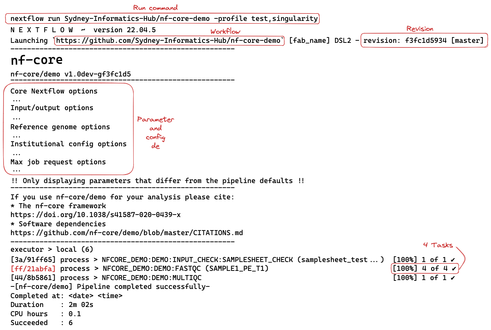
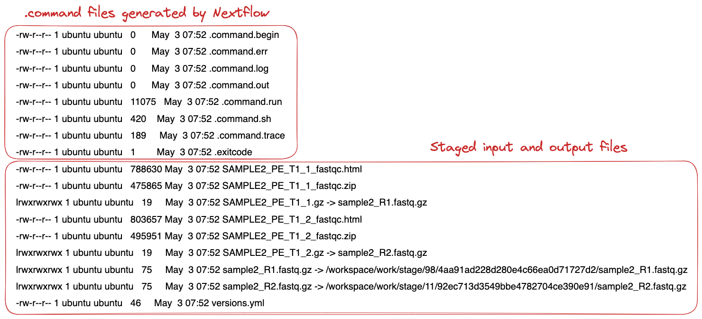
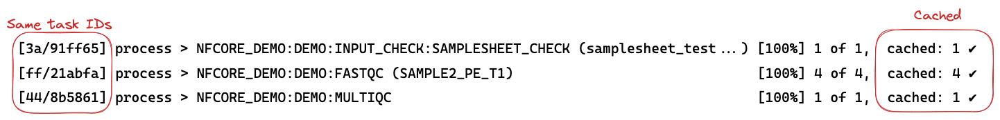

Introduction to Nextflow
- Learn about the core features of Nextflow.
- Learn Nextflow terminology.
- Learn fundamental commands and options for executing workflows.
1.1.1. What is Nextflow?

Nextflow is a workflow orchestration engine and domain-specific language (DSL) that makes it easy to write data-intensive computational workflows.
It is designed around the idea that the Linux platform is the lingua franca of data science. Linux provides many simple but powerful command-line and scripting tools that, when chained together, facilitate complex data manipulations.
Nextflow extends this approach, adding the ability to define complex program interactions and a high-level parallel computational environment based on the dataflow programming model.
Nextflow’s core features are:
- Workflow portability and reproducibility
- Scalability of parallelization and deployment
- Integration of existing tools, systems, and industry standards
Whether you are working with genomics data or other large and complex data sets, Nextflow can help you to streamline your workflow and improve your productivity.
1.1.2. Processes and Channels
In Nextflow, processes and channels are the fundamental building blocks of a workflow.

A process is a unit of execution that represents a single computational step in a workflow. It is defined as a block of code that typically performs a one specific task and specifies its input and outputs, as well as any directives and conditional statements required for its execution. Processes can be written in any language that can be executed from the command line, such as Bash, Python, or R.
Processes in are executed independently (i.e., they do not share a common writable state) as tasks and can run in parallel, allowing for efficient utilization of computing resources. Nextflow automatically manages the data dependencies between processes, ensuring that each process is executed only when its input data is available and all of its dependencies have been satisfied.
A channel is an asynchronous first-in, first-out (FIFO) queue that is used to join processes together. Channels allow data to passed between processes and can be used to manage data, parallelize tasks, and structure workflows. Any process can define one or more channels as an input and output. Ultimately the workflow execution flow itself, is implicitly defined by these declarations.
Importantly, processes can be parameterized to allow for flexibility in their behavior and to enable their reuse in and between workflows.
1.1.3. Execution abstraction
While a process defines what command or script is executed, the executor determines how and where the script is executed.
Nextflow provides an abstraction between the workflow’s functional logic and the underlying execution system. This abstraction allows users to define a workflow once and execute it on different computing platforms without having to modify the workflow definition. Nextflow provides a variety of built-in execution options, such as local execution, HPC cluster execution, and cloud-based execution, and allows users to easily switch between these options using command-line arguments.
If not specified, processes are executed on your local computer. The local executor is useful for workflow development and testing purposes. However, for real-world computational workflows, a high-performance computing (HPC) or cloud platform is often required.
You can find a full list of supported executors as well as how to configure them here.
1.1.4. Nextflow CLI
Nextflow implements a declarative domain-specific language (DSL) that simplifies the writing of complex data analysis workflows as an extension of a general-purpose programming language. As a concise DSL, Nextflow handles recurrent use cases while having the flexibility and power to handle corner cases.
Nextflow is an extension of the Groovy programming language which, in turn, is a super-set of the Java programming language. Groovy can be thought of as “Python for Java” and simplifies the code.
Nextflow provides a robust command line interface for the management and execution of workflows. Nextflow can be used on any POSIX compatible system (Linux, OS X, etc). It requires Bash 3.2 (or later) and Java 11 (or later, up to 18) to be installed.
Nextflow is distributed as a self-installing package and does not require any special installation procedure.
Nextflow can be installed using a few easy steps:
- Download the executable package using either
wget -qO- https://get.nextflow.io | bashorcurl -s https://get.nextflow.io | bash - Make the binary executable on your system by running
chmod +x nextflow. - Move the
nextflowfile to a directory accessible by your$PATHvariable, e.g,mv nextflow ~/bin/
1.1.5.Nextflow options and commands
Nextflow provides a robust command line interface for the management and execution of workflows. The top-level interface consists of options and commands.
You can list Nextflow options and commands with the -h option:
nextflow -h
Options for a commands can also be viewed by appending the -help option to a Nextflow command.
For example, options for the the run command can be viewed:
nextflow run -helpFind out which version of Nextflow you are using with the version option.
The version of Nextflow you are using can be printed using the -v option:
nextflow -versionOr:
nextflow -v
1.1.6. Managing your environment
You can use environment variables to control the Nextflow runtime and the underlying Java virtual machine. These variables can be exported before running a workflow and will be interpreted by Nextflow. For most users, Nextflow will work without setting any environment variables. However, to improve reproducibility and to optimise your resources, you will benefit from establishing environmental variables.
For example, for consistency, it is good practice to pin the version of Nextflow you are using with the NXF_VER variable:
export NXF_VER=<version number>Pin the version of Nextflow to 22.04.5 using the NXF_VER environmental variable and check that it has been applied.
Export the version using the NXF_VER environmental variable:
export NXF_VER=22.04.5Check that the new version has been applied using the -v option:
nextflow -v
Similarly, if you are using a shared resource, you may also consider including paths to where software is stored and can be accessed using the NXF_SINGULARITY_CACHEDIR or the NXF_CONDA_CACHEDIR variables:
export NXF_CONDA_CACHEDIR=<custom/path/to/conda/cache>Create a new folder with the path /home/training/singularity_cache to store your singularity images and export its location using the NXF_SINGULARITY_CACHEDIR environmental variable:
Make a new folder for your singularity images:
mkdir /home/ubuntu/singularity_cacheExport your new folder as your cache directory for singularity images using the NXF_SINGULARITY_CACHEDIR environmental variable:
export NXF_SINGULARITY_CACHEDIR=/home/training/singularity_cacheSingularity images downloaded by workflow executions will now be stored in this directory.
You may want to include these, or other environmental variables, in your .bashrc file (or alternate) that is loaded when you log in so you don’t need to export variables every session.
A complete list of environmental variables can be found here.
1.1.7. Executing a workflow
Nextflow seamlessly integrates with code repositories such as GitHub. This feature allows you to manage your project code and use public Nextflow workflows quickly, consistently, and transparently.
The Nextflow pull command will download a workflow from a hosting platform into your global cache $HOME/.nextflow/assets folder.
If you are pulling a project hosted in a remote code repository, you can specify its qualified name or the repository URL. The qualified name is formed by two parts - the owner name and the repository name separated by a / character. For example, if a Nextflow project bar is hosted in a GitHub repository foo at the address http://github.com/foo/bar, it could be pulled using:
nextflow pull foo/barOr by using the complete URL:
nextflow pull http://github.com/foo/barAlternatively, the Nextflow clone command can be used to download a workflow into a local directory of your choice:
nextflow clone foo/bar <your/path>The Nextflow run command is used to initiate the execution of a workflow:
nextflow run foo/barIf you run a workflow, it will look for a local file with the workflow name you’ve specified. If that file does not exist, it will look for a public repository with the same name on GitHub (unless otherwise specified). If it is found, Nextflow will automatically pull the workflow to your global cache and execute it.
Be aware of what is already in your current working directory where you launch your workflow, if there are other workflows (or configuration files) you may encounter unexpected results.
Execute the hello workflow directly from nextflow-io GitHub repository.
Use the run command to execute the nextflow-io/hello workflow:
nextflow run nextflow-io/helloMore information about the Nextflow run command can be found here.
1.1.8. Executing a revision
When a Nextflow workflow is created or updated using GitHub (or another code repository), a new revision is created. Each revision is identified by a unique number, which can be used to track changes made to the workflow and to ensure that the same version of the workflow is used consistently across different runs.
The Nextflow info command can be used to view workflow properties, such as the project name, repository, local path, main script, and revisions. The * indicates which revision of the workflow you have stickied and will be executed when using the run command.
nextflow info <workflow>It is recommended that you use the revision flag every time you execute a workflow to ensure that the version is correct. To use a specific revision, you simply need to add it to the command line with the --revision or -r flag. For example, to run a workflow with the v1.0 revision, you would use the following command:
nextflow run <workflow> -r v1.0Nextflow automatically provides built-in support for version control using Git. With this, users can easily manage and track changes made to a workflow over time. A revision can be a git branch, tag or commit SHA number, and can be used interchangeably.
Execute the hello workflow directly from the nextflow-io GitHub using the v1.1 revision tag.
Execute the nextflow-io/hello workflow with the revision -r option:
nextflow run nextflow-io/hello -r v1.1The warning shown above is expected as the v1.1 workflow revision was written using an older version of Nextflow that uses the depreciated echo method. As both Nextflow and workflows are updated independently over time, workflows and Nextflow functions can get out of sync. While most nf-core workflows are now dsl2 (the current way of writing workflows), some are still written in dsl1 and may require older version of Nextflow to run.
If your local version of a workflow is not the latest you be shown a warning and will be required to use a revision flag when executing the workflow. You can update a workflow with the Nextflow pull command with a revision flag.
1.1.9. Nextflow log
It is important to keep a record of the commands you have run to generate your results. Nextflow helps with this by creating and storing metadata and logs about the run in hidden files and folders in your current directory (unless otherwise specified). This data can be used by Nextflow to generate reports. It can also be queried using the Nextflow log command:
nextflow logThe log command has multiple options to facilitate the queries and is especially useful while debugging a workflow and inspecting execution metadata. You can view all of the possible log options with -h flag:
nextflow log -hTo query a specific execution you can use the RUN NAME or a SESSION ID:
nextflow log <run name>To get more information, you can use the -f option with named fields. For example:
nextflow log <run name> -f process,hash,durationThere are many other fields you can query. You can view a full list of fields with the -l option:
nextflow log -lUse the log command to view with process, hash, and script fields for your tasks from your most recent Nextflow execution.
Use the log command to get a list of you recent executions:
nextflow log
Query the process, hash, and script using the -f option for the most recent run:
nextflow log crazy_faggin -f process,hash,script1.1.10. Execution cache and resume
Task execution caching is an essential feature of modern workflow managers. As such, Nextflow provides an automated caching mechanism for every execution. When using the Nextflow -resume option, successfully completed tasks from previous executions are skipped and the previously cached results are used in downstream tasks.
Nextflow caching mechanism works by assigning a unique ID to each task. The task unique ID is generated as a 128-bit hash value composing the the complete file path, file size, and last modified timestamp. These ID’s are used to create a separate execution directory where the tasks are executed and the outputs are stored. Nextflow will take care of the inputs and outputs in these folders for you.
A multi-step workflow is required to demonstrate cache and resume. The Sydney-Informatics-Hub/nf-core-demo workflow was created with the nf-core create command and has the same structure as nf-core workflows. It is a toy example with 3 processes:
SAMPLESHEET_CHECK- Executes a custom python script to check the input sample sheet is valid.
FASTQC- Executes FastQC using the
.fastq.gzfiles from the sample sheet as inputs.
- Executes FastQC using the
MULTIQC- Executes MultiQC using the FastQC reports generated by the
FASTQCprocess.
- Executes MultiQC using the FastQC reports generated by the
The Sydney-Informatics-Hub/nf-core-demo is a very small nf-core workflow. It uses real data and bioinformatics software and requires additional configuration to run successfully. To run this example you will need to include two profiles in your execution command. Profiles are sets of configuration options that can be accessed by Nextflow. Profiles will be explained in greater detail during the Configuring nf-core workflows section of the workshop.
To run this workflow, both the test profile and a software management profile (such as singularity) are required:
nextflow run Sydney-Informatics-Hub/nf-core-demo -profile test,singularityThe command line output will print something like this:

Executing this workflow will create a work directory and a my_results directory with selected results files.
In the schematic above, the hexadecimal numbers, such as ff/21abfa, identify the unique task execution. These numbers are also the prefix of the work directories where each task is executed.
You can inspect the files produced by a task by looking inside the work directory and using these numbers to find the task-specific execution path:
ls -la work/ff/21abfa87cc7cdec037ce4f36807d32/The files that have been selected for publication in the my_results folder can also be explored:
ls my_resultsIf you look inside the work directory of a FASTQC task, you will find the files that were staged and created when this task was executed:

The FASTQC process runs four times, executing in a different work directories for each set of inputs. Therefore, in the previous example, the work directory [1a/3c54ed] represents just one of the four sets of input data that was processed.
To print all the relevant paths to the screen, use the -ansi-log option can be used when executing your workflow:
nextflow run Sydney-Informatics-Hub/nf-core-demo -profile test,singularity -ansi-log falseIt’s very likely you will execute a workflow multiple times as you find the parameters that best suit your data. You can save a lot of spaces (and time) by resuming a workflow from the last step that was completed successfully and/or unmodified.
By adding the -resume option to your run command you can use the cache rather than re-running successful tasks:
nextflow run Sydney-Informatics-Hub/nf-core-demo -profile test,singularity -resumeIf you run the Sydney-Informatics-Hub/nf-core-demo workflow again without making any changes you will see that the cache is used:

In practical terms, the workflow is executed from the beginning. However, before launching the execution of a process, Nextflow uses the task unique ID to check if the work directory already exists and that it contains a valid command exit state with the expected output files. If this condition is satisfied, the task execution is skipped and previously computed results are used as the process results.
Notably, the -resume functionality is very sensitive. Even touching a file in the work directory can invalidate the cache.
Invalidate the cache by touching a .fastq.gz file in a FASTQC task work directory (you can use the touch command). Execute the workflow again with the -resume option to show that the cache has been invalidated.
Execute the workflow for the first time (if you have not already).
nextflow run Sydney-Informatics-Hub/nf-core-demo -profile test,singularityUse the task ID shown for the FASTQC process and use it to find and touch a the sample1_R1.fastq.gz file:
touch work/ff/21abfa87cc7cdec037ce4f36807d32/sample1_R1.fastq.gzExecute the workflow again with the -resume command option:
nextflow run Sydney-Informatics-Hub/nf-core-demo -profile test,singularity -resumeYou should that 2 of 4 tasks for FASTQC and the MULTIQC task were invalid and were executed again.
Why did this happen?
In this example, the cache of two FASTQC tasks were invalid. The sample1_R1.fastq.gz file is used by in the samplesheet twice. Thus, touching the symlink for this file and changing the date of last modification disrupted two task executions.
Your work directory can get very big very quickly (especially if you are using full sized datasets). It is good practise to clean your work directory regularly. Rather than removing the work folder with all of it’s contents, the Nextflow clean function allows you to selectively remove data associated with specific runs.
nextflow clean -helpThe -after, -before, and -but options are all very useful to select specific runs to clean. The -dry-run option is also very useful to see which files will be removed if you were to -force the clean command.
You Nextflow to clean your work work directory of staged files but keep your execution logs.
Use the Nextflow clean command with the -k and -f options:
nextflow clean -k -f1.1.11. Listing and dropping cached workflows
Over time, you might want to remove a stored workflows. Nextflow also has functionality to help you to view and remove workflows that have been pulled locally.
The Nextflow list command prints the projects stored in your global cache folder ($HOME/.nextflow/assets). These are the workflows that were pulled when you executed either of the Nextflow pull or run commands:
nextflow listIf you want to remove a workflow from your cache you can remove it using the Nextflow drop command:
nextflow drop <workflow>View your cached workflows with the Nextflow list command and remove the nextflow-io/hello workflow with the drop command.
List your workflow assets:
nextflow listDrop the nextflow-io/hello workflow:
nextflow drop nextflow-io/helloCheck it has been removed:
nextflow list- Nextflow is a workflow orchestration engine and domain-specific language (DSL) that makes it easy to write data-intensive computational workflows.
- Environment variables can be used to control your Nextflow runtime and the underlying Java virtual machine.
- Nextflow supports version control and has automatic integrations with online code repositories.
- Nextflow will cache your runs and they can be resumed with the
-resumeoption. - You can manage workflows with Nextflow commands (e.g.,
pull,clone,list, anddrop).